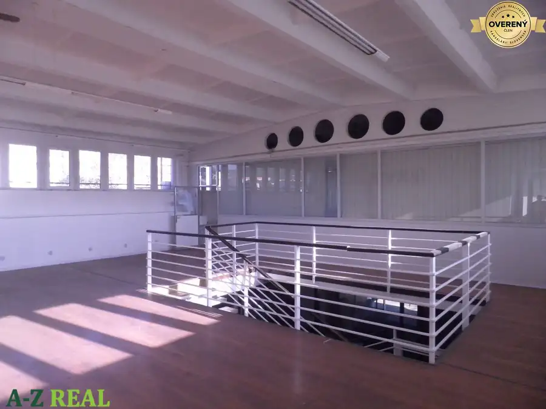
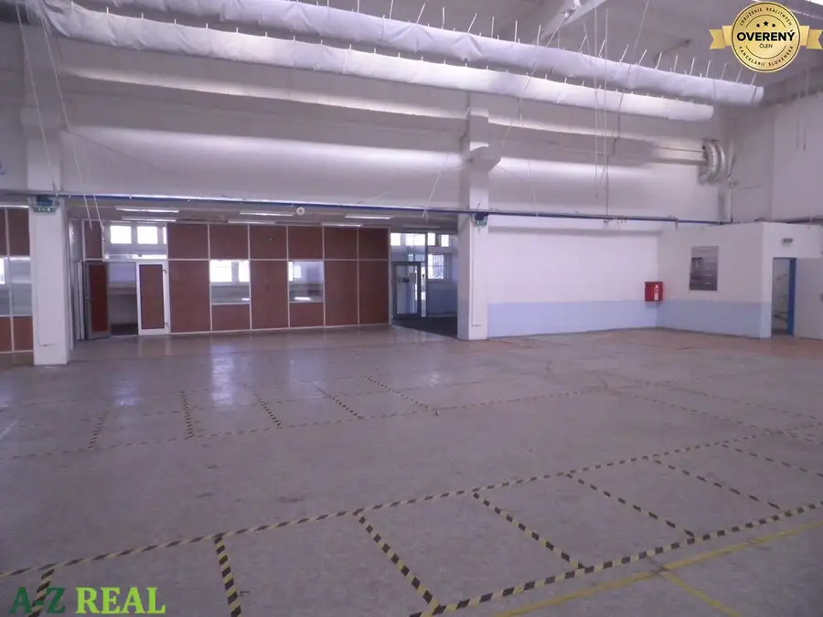
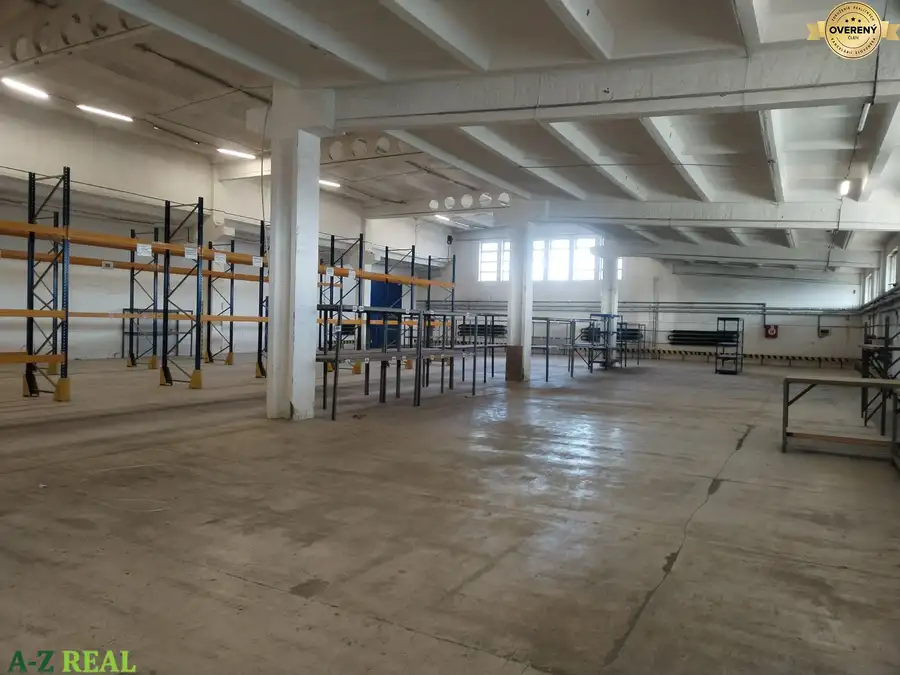
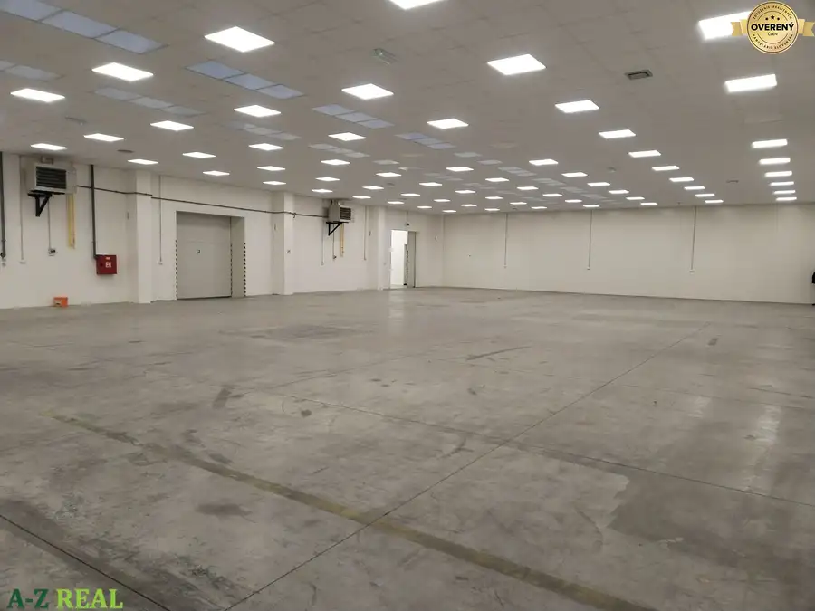
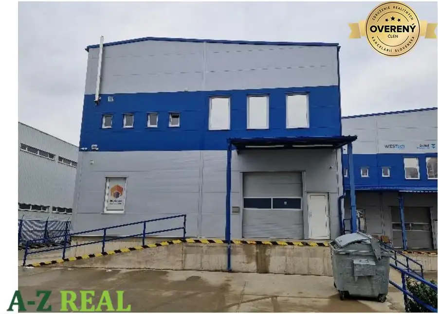
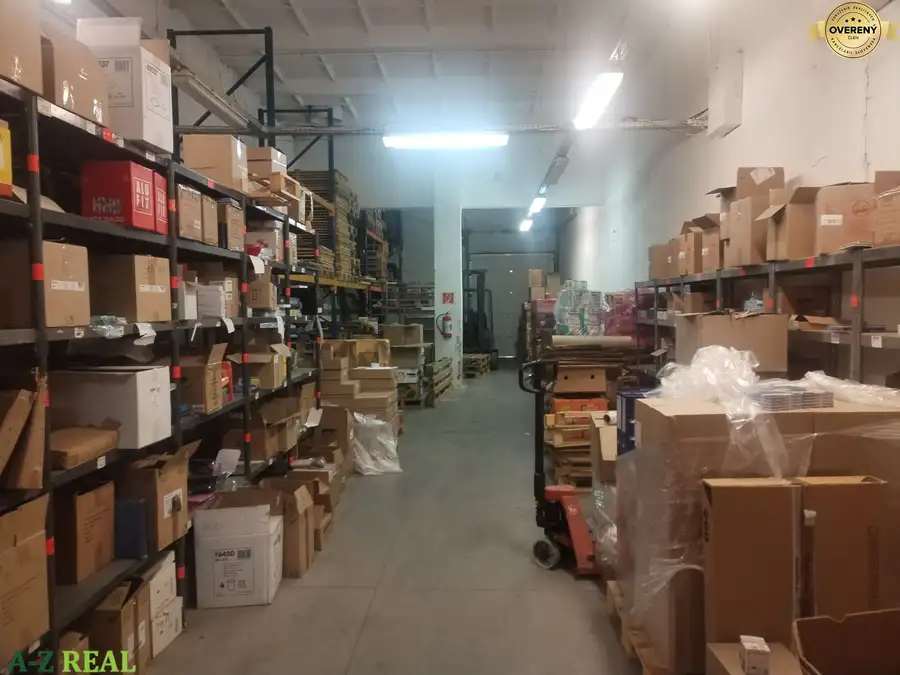
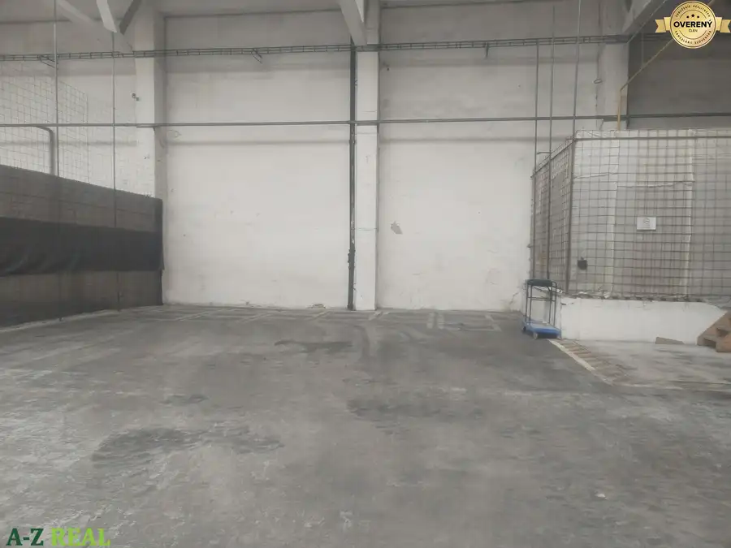
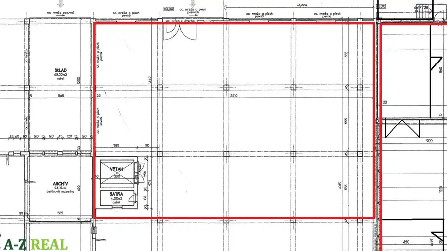
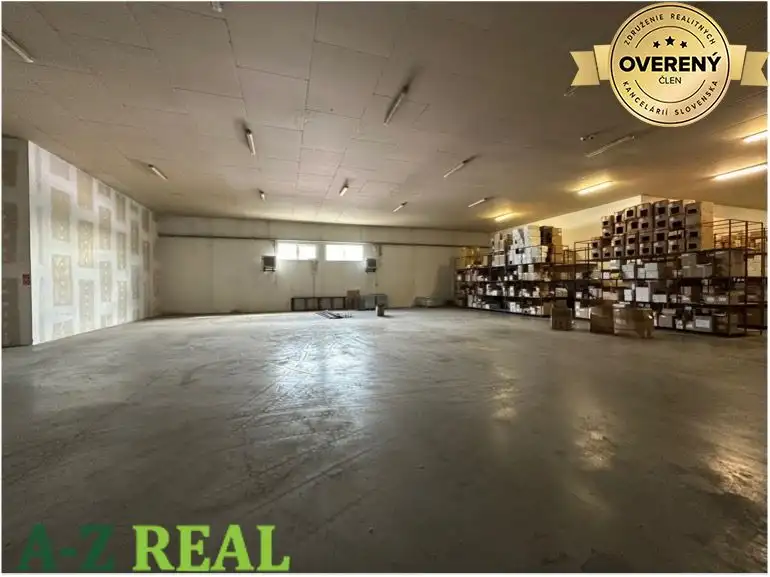

Aktuálna ponuka
9 nehnuteľností, predovšetkým byty. Každá má vlastnú stránku s fotkami, popisom a mapou.
Prezrieť ponukuPavol MedvecRealitný maklér
Realitný maklér · A-Z REAL spol. s r.o.
Predaj a prenájom nehnuteľností · Bratislava, Bratislava.




Nebytové priestory10 Cena dohodouNa prenájom skladové priestory so zázemím 664 m2, Stará Vajnorská. Nové Mesto, Bratislava 664 m² Ponúkame na prenájom skladové priestory zo zázemím o výmere 664 m2 + nakladacia rampa 52 m2. Skladová hala sa nachádza v modernizovanom areáli so…
Nebytové priestory10 Cena dohodouSklad 294 m2+ kancelárie 76 m2. Nové Mesto, Bratislava 294 m² Na prenájom je skladový priestor 294 m2 s vlastnou administrativou 76m2. Prístup do skladu je cez nakladaciu rampu a automatickú bránu. Nakladacia…
Nebytové priestory4 Cena dohodouSkladové priestory 600-800m2 na prenájom. Nové Mesto, Bratislava 600 m² Na prenájom sú skladové priestory s plochou 600- 800 m2. Vstup je cez bránu na úrovni terénu. Vnútorná výška 4,5 m2. Sklad má vlastné sociálne…
Nebytové priestory5 Cena dohodouNa prenájom sklad 300 m2. Petržalka, Bratislava 300 m² Na prenájom je skladový priestor s plochou 300m2. Vstup je na úrovni terénu cez spojovaciu chodbu, alebo cez bránu na úrovni nakladacej rampy.…
Nebytové priestory3 Cena dohodouNa prenájom sklad 440 m2. Rača, Bratislava 440 m² Na prenájom je skladová hala s plochou 440 m2. Vnútorná výška je 3,5 m. Podlaha betónová. Vstup je cez bránu na nakladacej rampe. Kúrenie je…
Nebytové priestory3 Cena dohodouNa prenájom skladový priestor 385 m2 Nové Mesto, Bratislava 385 m² Na prenájom je hala s plochou 385 m2. Vstup je cez automatickú branu. Vnútorná výška haly 6,5m. Podlaha betónová s bezprašnou pancierovou úpravou.…Tomuto výberu zatiaľ nezodpovedá žiadna ponuka. Napíšte mi, čo hľadáte.
Volám sa Pavol Medvec. Som realitný maklér kancelárie A-Z REAL spol. s r.o. a pôsobím predovšetkým v lokalitách Bratislava a Bratislava. (Bratislavský kraj).
9 nehnuteľností, predovšetkým byty. Každá má vlastnú stránku s fotkami, popisom a mapou.
Prezrieť ponukuBratislava, Bratislava. a okolie. Ponuku si môžete prezrieť podľa lokality.
Nehnuteľnosti v lokaliteOdhad trhovej ceny, príprava prezentácie, obhliadky, zmluvy a odovzdanie nehnuteľnosti.
Dohodnúť stretnutieNa čo sa pýtate najčastejšie, skôr než sa stretneme.
Odhad trhovej ceny vychádza z aktuálnych ponúk a predajov v lokalite, nie z cenníkových tabuliek. Podmienky Vám poviem pri prvom telefonáte.
Najprv obhliadka a odhad ceny, potom príprava prezentácie (fotografie, popis, inzercia), obhliadky so záujemcami, rezervačná zmluva, kúpna zmluva, návrh na vklad do katastra a odovzdanie nehnuteľnosti. O každom kroku viete vopred.
Najrýchlejšie cez WhatsApp alebo telefón. Termín stretnutia alebo obhliadky dohodneme podľa Vás.